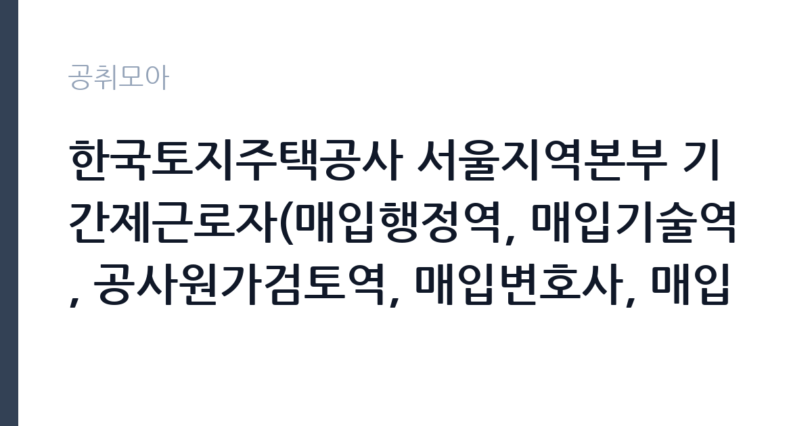

[공공기관] 한국토지주택공사 서울지역본부 기간제근로자(매입행정역, 매입기술역, 공사원가검토역, 매입변호사, 매입감정평가사) 채용공고
한국토지주택공사 · 서울 · 마감 2026-11-02 (D-15) · 출처 잡알리오

한눈에 보는 모집 조건
| 기관 | 한국토지주택공사 |
|---|---|
| 공고명 | 한국토지주택공사 서울지역본부 기간제근로자(매입행정역, 매입기술역, 공사원가검토역, 매입변호사, 매입감정평가사) 채용공고 |
| 고용형태 | 기간제 |
| 근무지 | 서울 |
| 게시일 | 2026-10-19 |
| 마감일 | 2026-11-02 (D-15) |
지원자격, 이렇게 읽으세요
- 공공기관 채용공시
- 세부 조건은 원문 공고문 확인
공통 요건이 까다로운 편입니다. LH 인사규정과 기간제근로자 운영지침상 채용금지 사유에 해당하지 않아야 하고, 본인이나 생계를 같이하는 가족이 지역본부 관할지역에서 매도신청이나 심의위원을 한 이력이 없어야 합니다. LH와 대한주택공사, 한국토지공사에 근무한 이력이 있어도 지원할 수 없습니다. 남성은 병역을 마쳤거나 면제되어야 하고, 공고일 현재 만 18세 이상이어야 합니다. 직무별로는 매입행정역의 경우 운전면허 2종 보통 이상을 갖추고 공인중개사, 주택관리사, 또는 관련 사무소 실무경력 5년 이상 중 하나를 충족해야 합니다.
이 공고의 포인트
이 공고의 특징은 자격증이 곧 직무라는 점입니다. 공인중개사는 매입행정역, 감정평가사는 매입감정평가사, 변호사는 매입변호사로 트랙이 나뉘고, 기술 분야 자격은 매입기술역과 원가검토역으로 이어집니다. LH의 토지와 주택 매입 업무는 보상 협의와 계약, 감정, 원가 검토가 얽힌 실무라 전문 자격자의 수요가 꾸준합니다. 기간제이지만 LH라는 대형 공공기관의 매입 실무를 경험할 수 있어, 관련 분야 경력을 쌓으려는 전문가에게 유리합니다. 다만 기간제법에 따라 정규직 전환 대상이 아니라는 점은 분명히 확인해야 합니다.
전형은 어떻게 진행되나
전형은 서류심사와 면접전형으로 진행됩니다. 서류에서는 자격증과 경력이 직무 요건에 맞는지 확인하고, 면접에서는 매입·보상 실무 이해도와 협상 능력을 봅니다. 접수는 LH 채용 홈페이지를 통해 온라인으로 받고, 마감은 2026년 11월 2일입니다. 자격증 사본과 경력증명서, 4대보험 자격득실확인서를 준비해야 하며, 경력 기간 산정 기준은 공고문에 명시된 방식을 따라야 합니다. 근무지가 서울지역본부라는 점과 관할 지역 범위를 확인한 뒤 지원하세요.
원문에서 확인한 전형 방식
[공통] 1. 한국토지주택공사 「인사규정」제9조(채용금지) 및 「기간제근로자 운영지침」제15조(채용금지)에 해당되지 아니한 자 2. 본인, 배우자, 생계를 같이하는 본인의 직계존비속, 생계를 같이하는 배우자의 직계존비속이 지역본부 관할지역 내 매도신청 및 심의위원 등을 하지 아니한 자 3. 공고일 기준 한국토지주택공사 「직제규정」 제3조, 제4조, 제5조에 따른 임직원으로 근무한 이력이 없는 자 (대한주택공사 및 한국토지공사의 근무 이력도 없어야 채용 가능) 4. 남자의 경우 병역을 필하였거나 면제된 자 5. 공고일 현재 만 18세 이상인 자 [매입행정역] 공고일 기준 운전면허(2종 보통 이상) 자격증 소지한 자로서, 아래 제1호 내지 제3호 자격요건 중 하나를 충족하는 자 1. 공인중개사 2. 주택관리사 3. 공인중개사사무소, 감정평가법인(사무소), 법무사사무소, 법률사무소·법무법인에서 실무 경력 5년 이상 종사한 자 [매입기술역] 공고일 기준 운전면허(2종 보통 이상) 자격증 소지자로서, 아래 제1호 및 제2호를 모두 충족하는 자 1. 해당분야 기사 이상 자격 소지자 2. 해당분야(건설·전기·정보통신·소방시설공사)
이런 분께 추천해요
- 공인중개사·주택관리사 자격으로 보상 실무를 시작하려는 지원자
- 감정평가사·변호사 자격을 활용해 공공 매입 업무를 경험하려는 전문가
- 건설 원가 검토 경력을 가진 기술직 지원자
지원 전 체크리스트
- 직무별 자격 요건과 경력 연차를 충족하는가
- LH 및 전신 기관 근무 이력이 없는가
- 가족의 매도신청·심의위원 이력이 없는가
- 경력증명서와 자격증 사본을 준비했는가
모집 일정과 제출 타이밍
접수 마감은 2026년 11월 2일입니다. 서류심사 결과와 면접 일정은 개별 통보되며, 최종합격 후 근무 시작일은 지역본부 일정에 맞춰 정해집니다. 기간제 근로자로 계약 기간이 정해져 있고, 계약 만료 시 고용관계가 소멸합니다. 자격증 원본 확인 절차가 있을 수 있으므로 미리 준비하세요. 채용 일정은 기관 사정에 따라 조정될 수 있어 LH 채용 페이지를 확인하는 편이 좋습니다.
직무 이해하기: 공공기관
매입행정역은 토지와 주택 매입의 행정 절차를 담당합니다. 매도 신청 접수와 서류 검토, 계약 체결 지원, 대금 지급 절차를 진행합니다. 매입기술역은 건축물과 시설의 현황을 조사하고 기술적 검토 의견을 냅니다. 공사원가검토역은 공사비 산정의 적정성을 검토합니다. 매입변호사는 법률 검토와 분쟁 대응을, 매입감정평가사는 감정평가 결과의 적정성을 확인합니다. 다섯 직무가 하나의 매입 절차 안에서 연결되어 있어 부서 간 협업이 잦습니다.
자기소개서 작성 팁
자기소개서는 자격증 취득 이후의 실무 경험으로 채우세요. 공인중개사라면 어떤 물건의 권리관계를 검토하고 어떤 문제를 해결했는지, 감정평가사라면 어떤 유형의 부동산을 평가했는지를 구체적으로 쓰는 것이 좋습니다. LH의 매입 업무는 공익성과 정확성이 함께 요구되므로, 이해관계자와 협의하며 기준을 지킨 경험을 강조하세요. 기간제라는 조건을 이해하고 있다는 점도 담담하게 밝히는 편이 신뢰를 줍니다. 지원 직무를 하나로 정하고 그 직무에 맞춰 서류를 재구성하세요.
면접 준비 포인트
면접에서는 직무별 실무 지식이 집중적으로 확인됩니다. 매입행정역은 권리분석과 계약 절차, 매입기술역은 건축물 상태 판단, 원가검토역은 공사비 산정 근거를 질문받을 수 있습니다. 매도인이 가격에 동의하지 않을 때의 협상 방식도 단골 질문입니다. 공공기관의 매입 업무에서 규정 준수와 재량의 경계를 어떻게 볼 것인지도 준비하세요. 기간제 근무 조건과 업무 범위를 이해하고 있는지 확인하는 질문도 나옵니다.
급여·근무조건 읽는 법
LH 기간제근로자의 보수는 기본급과 직무수당, 정기상여금을 합산한 월 지급액으로 공고문에 표시되는 구조입니다. 2026년 8월에 낸 경기남부지역본부 기간제 공고를 보면 대체채용(사업관리)의 월 지급액이 253만 8,840원, 법무관리가 351만 4,310원으로 기본급과 직무수당 10만원, 정기상여금으로 나뉘어 적혀 있었습니다. 이번 서울지역본부 공고의 직무별 금액은 원문 공고문의 보수표에서 직접 확인해야 하며, 자격 수준에 따라 격차가 큽니다. 기간제법에 따라 정규직·무기계약직 전환 대상이 아니라는 점도 함께 확인하세요.
자주 묻는 질문
- 정규직으로 전환되나요
아니요. 기간제법에 따른 기간의 정함이 있는 근로자로, 정규직이나 무기계약직 전환 대상이 아니라고 LH 공고에 명시되어 있습니다. - 여러 직무에 동시 지원할 수 있나요
공고상 하나의 직무를 선택해 지원하는 구조입니다. 중복 지원 가능 여부는 원문 공고문의 접수 안내를 확인하세요. - LH 근무 이력이 있으면 지원할 수 없나요
LH와 대한주택공사, 한국토지공사의 임직원 근무 이력이 없는 자가 요건으로 제시되어 있습니다. 세부 기준은 공고문을 확인하세요.
함께 보면 좋은 공고
[공공기관] '2026 장애인선수 현장밀착형 스포츠과학지원사업' 분석연구원(가급) 채용 공고 — 마감 2026-11-02[공공기관] (보훈 및 장애인 제한경쟁) 육아휴직자 대체 시간선택제 일자리 채용 — 마감 2026-11-02[공공기관] 광주전남지사 기간제 계약직(육아휴직 대체인력) 채용 공고 — 마감 2026-11-02출처: 잡알리오 공개정보를 바탕으로 공취모아가 정리한 안내글입니다. 모집 조건·일정은 변경될 수 있으니 지원 전 반드시 원문 공고문을 확인하세요. 본 글은 정보 제공용이며 합격을 보장하지 않습니다.